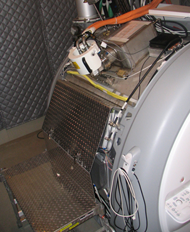

Operating Documentation
Direction 5440001-3, Rev# 6
Module Version 3.0, Version Date 2/8/10
Operating Documentation |
| ||||
| Potential Fatal Injury! | ||||
| before and while performing the Burst Disc Replacement procedure: | ||||
|
| ||||
| Potential Fatal Injury! | ||||
| before starting the Burst Disc Replacement procedure: | ||||
| Have all Work Assistants or Observers comply with the Buddy System Requirements & Certification subsection of 2301164PRE, MR Magnet - Safety Requirements. |
| ||||
| Asphyxiation Hazard! | ||||
| Procedure generates odorless, colorless helium gas that displaces oxygen in the air. | ||||
| Make sure magnet room vent exhaust fan is on before starting the Burst Disc Replacement procedure. |
| ||||
| Asphyxiation & Cold Burn Hazard! | ||||
| A magnet quench during procedure could result in rapid expulsion of liquid helium. | ||||
| Make sure magnet is ramped down to zero field before starting the Burst Disc Replacement procedure. |
| ||||
| Potential Cold Burn or Asphyxiation Hazard! | ||||
| Internal cryostat pressure build-up to >5.25 psig will open 5.25 psig relief valve. | ||||
Before removing either Ramp or Fill Port Caps or loosening
any component, resulting in the release of cryogen pressure:
|
| ||||
| Potential Cold Burn Hazard! | ||||
| Exposure to Cryogens and contact with cold objects is possible during the Burst Disc Replacement procedure. | ||||
| Wear protective clothing, nonabsorbent gloves and goggles when replacing the Burst Disc on a cold vent system. |
| ||||
| Electrical Shock Hazard! | ||||
| Contact with connectors leading to an energized Compressor can cause electrical shock. | ||||
| Whenever the input power to the Compressor is disconnected, follow OSHA Lockout-Tagout (LOTO) procedures to make sure power is not supplied to the Compressor. |
| NOTE: | If the site has Magnet Monitor proprietary software, connect to Magnet Monitor and turn off the alarm for vessel pressure. Turn the vessel pressure control to a high value of 0.5 psig and a low value of 0.4 psig. |
| Condition | Reference | Effectivity |
|---|---|---|
Make sure the area is secure and that ALL required Warning Signs are posted to meet the safety requirements stated in this document before starting the Burst Disc Replacement procedure. | - | |
Removal of some magnet enclosure components may be required to complete the Burst Disc Replacement procedure. Refer to this document and the appropriate Service Methods documentation (available through the Common Documentation Library at gehealthcare.com or your local GE Healthcare Service Representative) before continuing. | - | |
Make sure the magnet is at zero field in conformance with this document before removing/replacing the Burst Disc. | - | |
Make sure power to the Coldhead & Cryocooler is turned off before starting the Burst Disc Replacement procedure to prevent migration of cryo-pumped moisture and ice formation in Recondenser. | - | - |
Make sure the Magnet Room exhaust fan is on/operational and the Magnet Room door is open before starting the Burst Disc Replacement procedure. | - | - |
| ||||
| Potential Magnet Quench! | ||||
| A magnet quench during procedure would result in extremely rapid expulsion of liquid helium through the Plenum and Vent Adapter as the high internal energy of a 3.0 Tesla magnet (four times that of a 1.5T magnet) quickly dissipates. | ||||
| Make sure magnet is ramped down to zero field before removing/replacing the Burst Disc. |
| ||||
| To avoid cryo-pumping, replace a ruptured Burst Disc as soon as the vent pipe has no frost on it. Ice blocks can form inside the exhaust lines and Vertical Stack if the Burst Disc is not replaced promptly. | ||||
| ||||
| Make sure power to the Coldhead & Cryocooler is turned off before starting the Burst Disc Replacement procedure to prevent migration of cryo-pumped moisture and ice formation in Recondenser. | ||||
| ||||
| Make sure the area is secure and that ALL required Warning Signs are posted before removing/replacing the Burst Disc. | ||||
Determine if the magnet is ramped.
| ||||
Make sure resistance is within the Ramping Circuit Voltage specified
for Ramp Leads in Magnet Functional Checks. Before initiating rampdown, make sure sufficient cold helium gas
is exiting the Ramp Lead Extensions to cool the extensions. If magnet
rampdown is:
| ||||
If the magnet is ramped, ramp it down in conformance with Magnet Rampdown to Zero Field.
Shut down the compressor as follows to prevent pressure build-up in the Coldhead:
Turn ON (upward to I position) the Coldhead Drive Switch on the Compressor's back panel shown below.
Place the Drive Switch on the Compressor's front panel in the O (off) position. (See Illustration 2.)
Run the Coldhead for only 10 seconds with the Compressor turned Off to prevent pressure build-up in the Coldhead, then turn the Coldhead Drive Switch and the Compressor's Main Power Switch Off. (See Illustration 2.)
| ||||
| Electrical Shock Hazard! | ||||
| Contact with connectors leading to an energized Compressor can cause electrical shock. | ||||
| Whenever the input power to the Compressor is disconnected, follow loto procedures to make sure power is not supplied to the Compressor. |
Disconnect and LOTO input power to the Compressor. Verify that no voltage is present by using a DVM or equivalent measuring device.
| ||||
| Service Platform with side shield must be installed when working
on the magnet to protect side mounted components from damage. Illustration 3: Service Platform with Side Shield Installed  | ||||
Loosen all six retaining bolts on the Burst Disc Retaining Assembly sufficiently to prevent any binding when the Burst Disc is removed and replaced. (See the illustration below.)
Remove the top two retaining bolts. Make sure the Belleville and flat washers are placed onto the bolts after removal in the same orientation as before removal and the nuts are screwed onto the bolt to retain the hardware. (See the illustration below.)
| ||||
| Be careful when removing the old Burst Disc and inserting the new Burst Disc to avoid dislodging the O-ring in the Plenum Flange or scratch the sealing surface of the Flange. If the O-ring is dislodged, grease te O-Ring with vacuum grease and firmly reinstall it in the groove of the Plenum Flange. | ||||
Grab the metal tab on the Burst Disc and pull straight up to remove the old Burst Disc. Make a note of the Disc orientation. (See Illustration 5.)
Clean any Burst Disc or Garlok Gasket fragments out of the bottom of the Vent Adapter.
Orient the new Burst Disc with the Garlok Gasket facing the Vent Adapter and the metal tab oriented as shown below.
Insert the Disc by pushing it straight down into the gap left by the old Disc as shown below. If binding occurs, gently spread the gap between the Plenum and Captured Flange with a blunt object, such as a titanium box-end wrench.
When the Burst Disc is fully in place, replace the top two retaining bolts and washers in the same orientation and position before removal.
| ||||
| Do NOT overtighten the retaining bolts in the following step. Continued tightening after the Belleville washers are flattened will result in over torquing and may damage the Burst Disc. | ||||
Tighten the retaining bolts in a star pattern, 1/2 turn at a time, to obtain an even pressure between the O-ring seal and the Disc. Tighten the bolts only until the Belleville washer is just flattened; further tightening is not required. (See Illustration 4.)
Leak test the plenum O-ring gasket side of the Burst Disc, and repair any leaks.
If a magnet fill is not immediately scheduled at Disc replacement, pressurize the magnet with helium gas to 2 psig:
Connect the Helium Gas Hose 46-271135P16 to a cylinder (with Regulator 46-258151P1) with 99.999% GHe of helium gas.
Remove the 0.50 in. NPT plug on the V3 plumbing. See the illustration below.
Connect the helium hose's 0.5 in. NPT fitting to V3.
Open the cylinder's regulator and pressurize the magnet to 2 psig.
Leak check the Burst Disc installation and the entire plumbing system in conformance with Temperature, Pressure and Leak Troubleshooting.